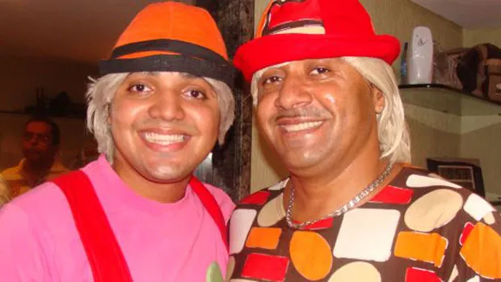

<header class="cabeçalho">
    <ul class="cabeçalho-lista"> 
    <li class="cabeçalho-lista-item">
     <section class="diego"> 
    <div class="diego"> 
    <h2 class="Tirulipa-título">Biografia do tirulipa</h2> 
    <p class="Diego-texto-um">Filho de Francisco Everardo (Tiririca) e Regione Brito Santos, nasceu em Fortaleza no dia 16 de novembro de 1984. Tirullipa pouco tinha contato com seu pai, pois quando tinha três anos de idade, Tiririca separou-se de Regione e saiu pelo Brasil afora para se apresentar em programas de TV.
        Ele seguiu os passos de humorista: com 10 anos de idade, já imitava seu pai e apresentava com ele espetáculos no circo da família, onde atuava como Tiririca Jr., porém, com o passar do tempo, resolveu não apenas imitá-lo, e assim desenvolveu sua identidade própria.[3] Entre os 15 e os 23 anos, fez parte de uma banda de forró.[4]
       
       Começou seu trabalhou na televisão pela TV Diário, em 2005.[5] Paralelamente, entre 2007 e 2011, trabalhou com seu pai no programa Show do Tom, da RecordTV, apresentado por Tom Cavalcante. Entre 2013 e 2014, apresentou o quadro Saco de Risada no Domingão do Faustão.[6]
       
       Depois do seu sucesso no programa Domingão do Faustão, Tirullipa começou a apresentar uma série de espetáculos no Brasil inteiro, nomeada Enchendo seu Saco de Risada.[7] O primeiro espetáculo aconteceu nos dias 18 e 19 de dezembro de 2015, em Fortaleza.[8] Com o sucesso, o humorista fez uma nova temporada do espetáculo em 2016, desta vez começando pela cidade de Olinda.[9]
       </p> 

       